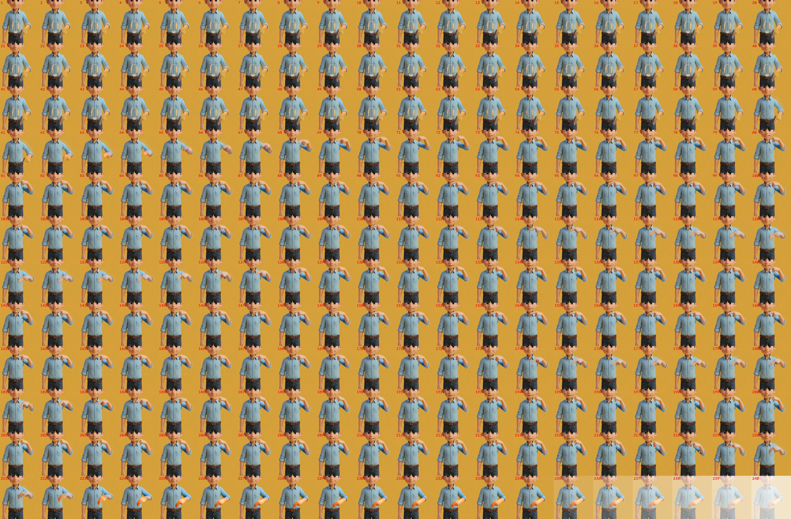
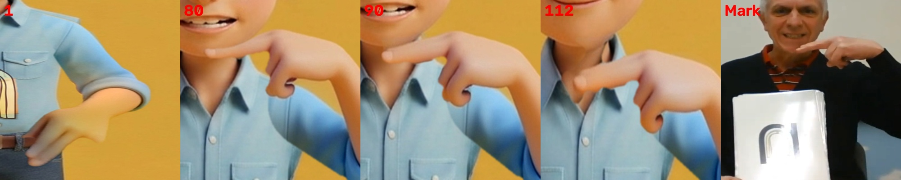

1 · 動画
音を出して、見てください。
名前 → /n/ ×3（10.00秒）確認待ち · 10.0秒・1920×1080・24.0fps・音声あり
作成：フォニ丸pi
PROS PHONICS / 成果物 · N・v16B
蜂谷さんのご依頼（11/7 19:48）の版です。はじめの絵とマーク先生の n の動き（左右反転）を Kling Motion Control に渡し、出てきた動画から腕と手だけを切り出しました。体・顔・服は腕なしの絵で止め、口と音声は v13 のままです。
| 文字 | 判定 | 中身 |
|---|---|---|
| N | ○ | 動き: 動画AIが作った5.33秒（160コマ）の腕の動きを、そのままの速さで使いました。止まっている時間（はじめ・あご下・おわり）だけで10.00秒に合わせています。 |
| N | ○ | n の音（73〜94・133〜154・193〜214コマ）の間は、手があご下にあります（手の上のふち y=350〜396）。 |
| N | ○ | 体・顔・服: 腕なしの絵で止めています。腕の範囲の外で、腕なしの絵と違うコマは0コマです（口・Nancy・カードを除く）。 |
| N | ○ | 止まりの間（127コマ）の腕まわりのコマ間の変化は0画素です。コマは混ぜていないので、残像は出ません。 |
| N | ○ | あご: 顔とあごは、いつも手の上に重ねています。 |
| N | △ | 作り方: ① はじめの絵（腕あり）と、マーク先生の n の 3.0〜8.6秒（左右反転）を Kling v2.6 pro Motion Control に1回だけ送りました ② 出た動画の各コマの体を、はじめの絵に合わせました（動画では体が最大約30px ずれていたため） ③ 各コマで、前腕＋手（肌の色）と袖（肩から肘）だけを切り出しました ④ 腕なしの絵の上に重ね、顔を手の上に戻しました。 |
| N | △ | 指示文は M v28 と同じ形です（カメラ固定、動くのは画面右側の腕だけ、顔・体・服は動かさない）。費用: 公式の値段は1秒0.112ドルです。5.33〜5.6秒分で約0.60〜0.63ドルです（請求の明細はAPIの権限がなく、未確認です）。 |


ご意見は phonics-seisaku チャンネルで @phonimaru-pi を付けて書いてください（例: @phonimaru-pi B の手をもう少しゆっくり）。
N_nancy_noodle_v16b.mp4 sha256 8737b5a50a7d